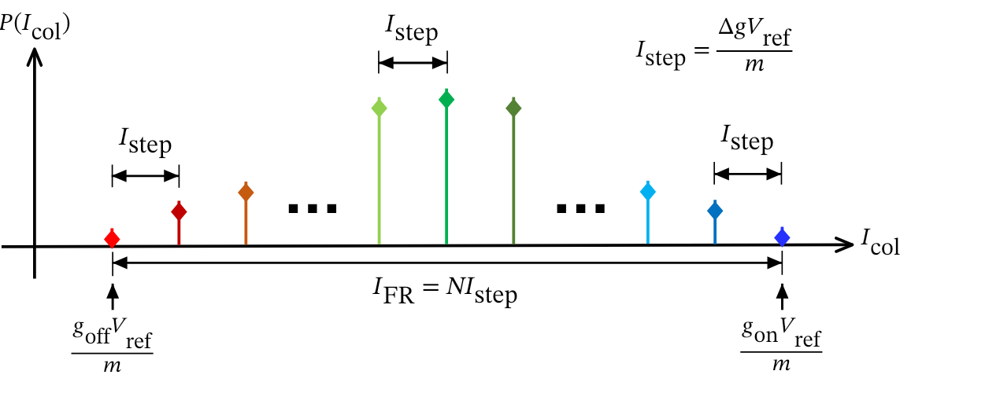

Separate
Ideal current spacing creates the analog margin available to distinguish neighboring dot-product codes.
Method · Distribution cartoon
Begin with discrete ideal column-current levels. Add device variation, parasitics, sensing mismatch, and ADC thermal noise one at a time to see how separation collapses and compute SNDR falls.
One mechanism at a time
Choose a numbered stage, move forward manually, or play the full sequence. The drawing and explanation change together.

Step 1 of 7 · Reference
Each dot-product code maps to a discrete column-current level. The spacing Istep and the full-range current IFR define the clean reference before non-idealities.
Design reading
Ideal current spacing creates the analog margin available to distinguish neighboring dot-product codes.
Device, array, and sensing non-idealities shift, compress, and broaden the code distributions.
The remaining separation at the ADC determines the usable SNDR and, ultimately, inference accuracy.
Use this mechanism chain to interpret the coordinates in the multi-bank explorer.
Apply the limits to the chip →